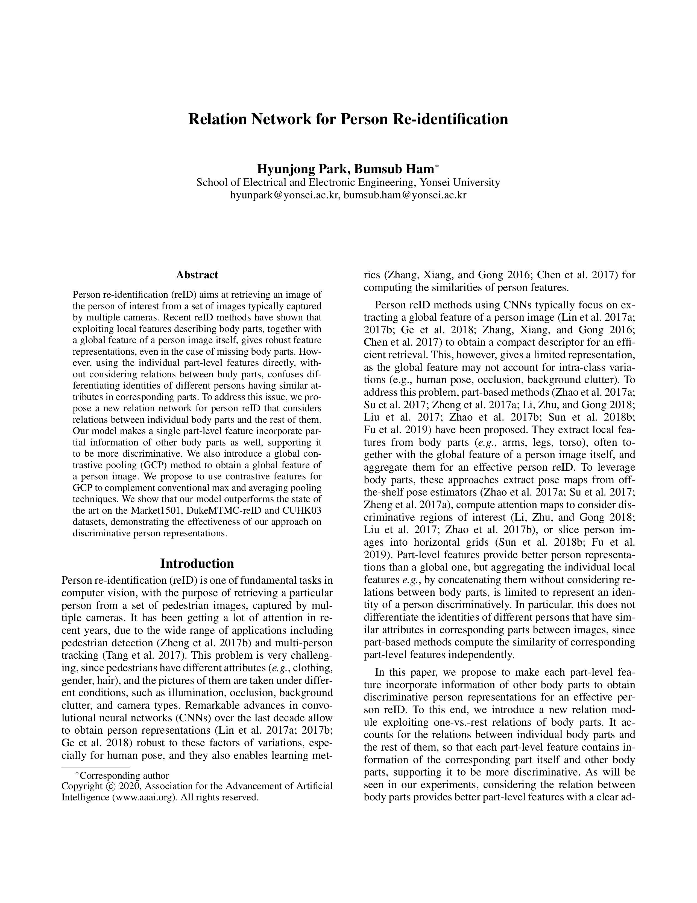

Fig. Visual comparison of retrieval results: (a) a relational module and (b) pooling methods. We show top-1 results. The relation module discriminates the same attribute for the person images of different identities. Global contrastive pooling (GCP) allows to aggregate features from discriminative regions, and provides a person representation robust to background clutter, overcoming the drawbacks of global average pooling (GAP) and global max pooling (GMP).
Person re-identification (reID) aims at retrieving an image of the person of interest from a set of images typically captured by multiple cameras. Recent reID methods have shown that exploiting local features describing body parts, together with a global feature of a person image itself, gives robust feature representations, even in the case of missing body parts. However, using the individual part-level features directly, without considering relations between body parts, confuses differentiating identities of different persons having similar attributes in corresponding parts. To address this issue, we propose a new relation network for person reID that considers relations between individual body parts and the rest of them. Our model makes a single part-level feature incorporate partial information of other body parts as well, supporting it to be more discriminative. We also introduce a global contrastive pooling (GCP) method to obtain a global feature of a person image. We propose to use contrastive features for GCP to complement conventional max and averaging pooling techniques. We show that our model outperforms the state of the art on the Market1501, DukeMTMC-reID and CUHK03 datasets, demonstrating the effectiveness of our approach on discriminative person representations.
Fig. Overview of our framework. The proposed reID model mainly consists of three parts: We first extract part-level features by applying GMP to individual horizontal slices of the feature map from the backbone network. We then input the local features into separate modules, a one-vs.-rest relation module and GCP, that give local relational and global contrastive features, respectively.
|  |
H. Park, B. Ham Relation Network for Person Re-identification In Proceedings of the AAAI Conference on Artificial Intelligence, 2020 [Paper on arXiv] |
@inproceedings{park2019relation,
title={Relation Network for Person Re-identification},
author={Park, Hyunjong and Ham, Bumsub},
booktitle={Proceedings of the AAAI Conference on Artificial Intelligence},
year={2020}
}
This research was supported by R&D program for Advanced Integrated-intelligence for Identification (AIID) through the National Research Foundation of KOREA (NRF) funded by Ministry of Science and ICT (NRF-2018M3E3A1057289).